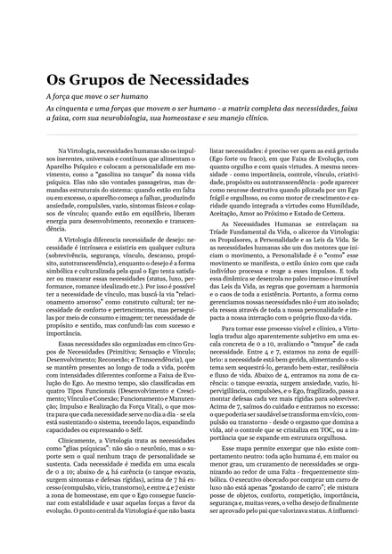
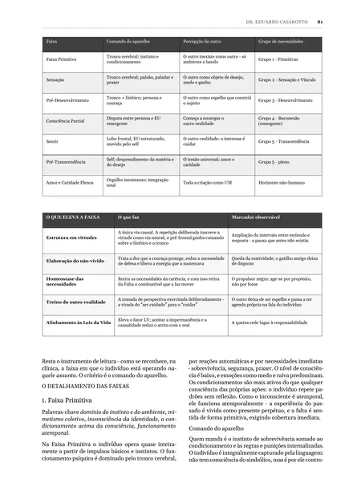

O que será abordado
Na aula, o Dr. Eduardo Casarotto passa por cada um destes temas para mostrar por que o mesmo manejo funciona com um paciente e não com outro. Aqui vai um resumo do que você vai ver. Na aula ao vivo, cada um ganha exemplos e casos.
1A formação da personalidade
Personalidade do Ego =
O comportamento é sempre produto dessa interação, nunca de um fator isolado. Uma parte vem pronta: o temperamento, herdado. O resto se constrói ao longo da vida e continua mudando, porque o cérebro conserva neuroplasticidade a vida inteira.
Quando se tenta treinar o comportamento sem olhar essa estrutura, o que se produz é persona: uma performance que afasta ainda mais a pessoa de quem ela é.
 Fundamentos da Virtologia, p. 297Toque para ampliar
Fundamentos da Virtologia, p. 297Toque para ampliar2O caráter
Para a Virtologia, o caráter é a interface entre o mundo interno e o ambiente. E ele se forma por uma sequência muito concreta:
O que foi reforçado pelo prazer vira caráter. O que foi criado para se defender da dor vira couraça de caráter. A couraça não é a pessoa: é a defesa da pessoa.
O caráter é feito de crenças valores princípios atitudes couraças, e tudo isso pode ser modificado e, se necessário, desfeito, sobretudo pela prática de virtudes.
 Fundamentos da Virtologia, p. 312Toque para ampliar
Fundamentos da Virtologia, p. 312Toque para ampliar3O temperamento
O temperamento é a base inata e biológica da personalidade: a intensidade da energia, a direção dela e a forma de reagir primeiro. A Virtologia organiza o temperamento em 12 campos, cada um com dois polos:
O temperamento não se troca. Não existe terapia séria que tente transformar um pensador em fazedor, e é por isso que um exercício de fazer, passado a alguém de temperamento pensador, tende a ter pouco efeito. O que existe é a maturidade do traço.
 Fundamentos da Virtologia, p. 300Toque para ampliar
Fundamentos da Virtologia, p. 300Toque para ampliar4As necessidades humanas
As necessidades são a "gasolina no tanque" da vida psíquica: impulsos universais e contínuos que colocam a personalidade em movimento. Não são vontades passageiras. Quando estão em falta ou em excesso, o aparelho psíquico começa a falhar, e aparecem ansiedade, compulsões, vazio, sintomas físicos e colapsos de vínculo.
Elas se organizam em cinco grupos: Primitivas Sensação e Vínculo Desenvolvimento Reconexão Transcendência
Há casos em que a dificuldade da pessoa vem de uma necessidade desequilibrada, algo mais biológico do que psíquico. Tratar como transtorno o que era carência é um dos erros que essa leitura evita.

Fundamentos da Virtologia, p. 369Toque para ampliar5Os mandatos de vida
A Virtologia chama de mandato a experiência central que a pessoa precisa viver em cada idade para a personalidade se construir bem. São 21 fases, do útero à longevidade. A cor mostra a Faixa de Evolução possível em cada fase, se as virtudes daquele mandato forem instaladas:
A pessoa atravessa a experiência, mesmo dolorosa, e constrói ferramentas para lidar com ela.
A experiência não acontece. Não há ferida, mas fica uma lacuna silenciosa.
A experiência acontece e não se resolve. Em vez de virtude, instala-se a couraça.
E ainda há o fator tempo: a experiência vivida cedo ou tarde demais. Perguntando fase por fase o que foi bem vivido, não vivido ou mal vivido, dá para mapear onde a personalidade está sólida, onde tem lacunas e onde guarda feridas.
6As Faixas de Evolução neurológica
Sete faixas, da mais primitiva à mais elevada. Elas mostram se quem comanda a pessoa são as partes do cérebro que existem para sobreviver e reagir na hora, ou o lobo frontal, que planeja, espera e pensa no outro.
Um exemplo: quem está numa faixa mais primitiva muitas vezes precisa treinar primeiro o controle, diferente de quem já está numa faixa mais avançada. O mesmo conselho que ajuda um paciente pode não servir para o outro.

Fundamentos da Virtologia, p. 81Toque para ampliarA aula é gratuita, e você pode fazer suas perguntas diretamente a ele.
Inscreva-se gratuitamente